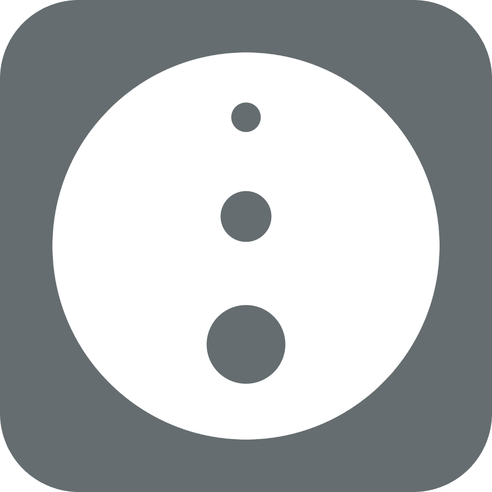
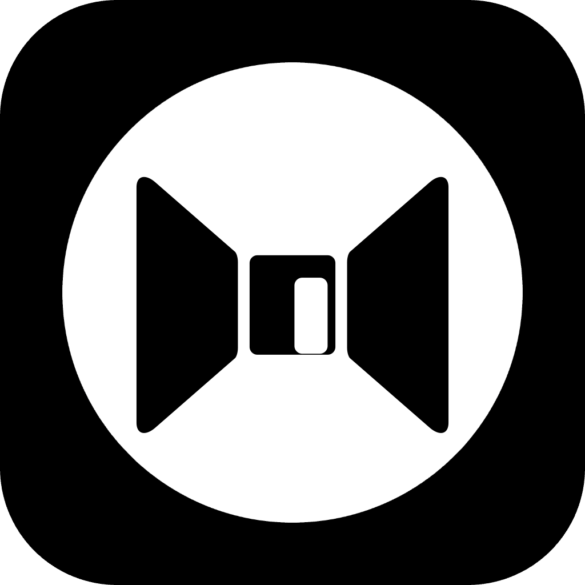

Uma visão tranquila de como o MINDBEBOP ajuda você a criar uma relação intencional com pensamentos que, de outra forma, ficariam sem atenção.
Fones de ouvido com cancelamento de ruído não eliminam os sons. Eles reduzem os sons que continuam desviando sua atenção.
O MINDBEBOP explora uma ideia semelhante com os pensamentos. Ele não foi criado para apagar memórias nem suprimir pensamentos. Ele oferece pequenas maneiras de mudar sua relação com o Thought Noise — a atividade mental que continua competindo pela sua atenção.
Alguns pensamentos podem precisar de uma resposta. Alguns precisam voltar mais tarde. Alguns precisam de menos estímulo ao redor. Às vezes, a própria atenção precisa de algum lugar para onde se mover.
E, às vezes, um pensamento não se acalma simplesmente porque você mudou sua relação com ele.
Ele pode precisar de algum lugar onde possa estar. Ou pode haver algum lugar para onde você queira ir a partir desse pensamento.
É por isso que Apps com cancelamento de ruído para a sua mente continua sendo uma parte importante do MINDBEBOP — mas não é o sistema inteiro.
Quando você quer responder a um pensamento recorrente.
Alguns pensamentos continuam voltando da mesma forma. Em vez de simplesmente repetir o pensamento, você pode responder a ele intencionalmente.
O pensamento original pode continuar existindo. O que muda é a relação: agora ele encontrou outra perspectiva.
Quando algo importa, mas você não quer continuar mantendo isso na sua atenção imediata.
Um lembrete, uma ideia ou um pensamento inacabado pode continuar voltando porque você não quer perdê-lo.
Você pode dar a ele outro momento para voltar, para não precisar continuar repetindo isso mentalmente agora.
Quando a atenção quer movimento, mas não mais informação.
Às vezes, não existe um pensamento específico que você queira resolver. A atenção simplesmente quer algum lugar para onde se mover.
Wander oferece à atenção um lugar de baixa estimulação onde ela pode se mover — sem feeds, pontuações, objetivos ou outro ciclo de recompensa para perseguir.
Quando um pensamento precisa de algum lugar onde possa estar.
Às vezes, você não quer responder a um pensamento, agendá-lo nem transformá-lo em algo que precisa fazer.
Você simplesmente quer deixá-lo de lado sem perdê-lo.
Thought Space permite que um pensamento se torne um Thought Block persistente e dá a ele um lugar no espaço 3D.
O MINDBEBOP chama isso de Spatial Mental Shelving.
Um pensamento pode ter um lugar
antes de ter um destino.
Quando existe algum lugar para onde você quer ir a partir daqui.
Às vezes, mudar sua relação com um pensamento não é o fim da história.
Você pode perceber uma diferença entre onde está agora e onde deseja estar.
Essa direção escolhida pode se tornar Mental Navigation. Mental Steps ajudam você a se mover da sua Current Position em direção a uma Mental Destination, um movimento de cada vez.
A rota não precisa permanecer fixa. Seu Next Move, sua rota ou sua Mental Destination podem mudar à medida que você avança.
Essas diferentes formas de relação aparecem em todo o MINDBEBOP. Diferentes ferramentas tornam possíveis diferentes tipos de interação.
Você não precisa classificar todos os pensamentos nem escolher a relação “correta”. Você decide o que quer fazer com aquilo que está ativo agora.
Mental Navigation quando existe algum lugar para onde você quer ir.
MindEntry é a camada de entrada e navegação do MINDBEBOP.
Mental Steps oferecem uma rota da sua Current Position em direção a uma Mental Destination, mostrando um movimento de cada vez.
Um Mental Step pode orientar uma ação no mundo real ou abrir outra ferramenta do MINDBEBOP.
À medida que você avança, a rota pode se adaptar. Você pode continuar, mudar o Next Move, mudar a rota ou mudar a própria Mental Destination.
Mental Navigation não significa se forçar a seguir um caminho fixo. Ela oferece um lugar de onde você pode continuar a partir de onde realmente está.
Outra maneira de olhar para um pensamento recorrente.
MindFlipOut permite captar um pensamento quando ele aparece e responder com outra maneira de enxergá-lo.
O objetivo não é provar que o pensamento original está errado. É mudar intencionalmente a relação em vez de simplesmente repetir o mesmo pensamento outra vez.
Dê a um pensamento outro momento para voltar.
MindShoutOut ajuda quando algo importa, mas você não quer continuar carregando isso na sua atenção imediata.
Programe o pensamento para voltar mais tarde e deixe que o lembrete cuide do momento para você.
Você não está perdendo o pensamento. Está dando a ele outro momento para voltar.
Um momento tranquilo em que menos interação pode ser suficiente.
MindZoneOut reduz a estimulação e dá à atenção um lugar mais tranquilo onde possa estar.
Nada precisa ser resolvido, organizado ou concluído durante esse momento.
MindZoneOut não decide o que um pensamento significa nem o que deveria acontecer com ele. Ele simplesmente cria espaço para menos.
Dê à atenção algum lugar para onde se mover — ou a um pensamento algum lugar onde possa estar.
MindBackyard oferece ambientes de baixa estimulação onde a atenção pode vagar sem precisar realizar nada.
Percorra Infinite Hallway, abra portas sem grandes consequências, mude de perspectiva ou interaja com Visual Noise tátil.
Mas MindBackyard também pode trabalhar com os próprios pensamentos.
Thought Space permite que um pensamento se torne um Thought Block persistente com um lugar próprio no espaço 3D.
Mova-o.
Gire-o.
Mude seu tamanho.
Aproxime-o ou afaste-o.
Deixe-o em algum lugar.
Volte quando quiser.
O Thought Block não precisa de uma categoria, prioridade, prazo ou ação.
Isso é Spatial Mental Shelving: dar a um pensamento um lugar fora da atenção imediata enquanto ele continua disponível.
Não preciso continuar pensando nisso.
Sei onde está.
Um Thought Block não é automaticamente um objetivo ou destino.
Mas, às vezes, você pode enxergar algum lugar para onde poderia ir a partir dele.
Você pode conectar um Thought Block a um ou mais Mental Steps salvos no MindEntry.
Esses possíveis caminhos podem permanecer junto ao pensamento sem começar automaticamente e sem transformar o Thought Block em uma tarefa.
Quando você escolhe um deles, MindEntry abre esses Mental Steps e a Mental Navigation pode começar.
Thought Block
↓
Possíveis caminhos
↓
Escolha um quando quiser
↓
Mental Navigation
Uma possibilidade não precisa se transformar em pressão.

Liberação integrada baseada no tempo para pensamentos que pertencem a outro momento.
Alguns pensamentos são sobre o passado. Outros são sobre o futuro.
Quando um pensamento não pertence ao presente, reconhecer sua relação com o tempo pode oferecer outra maneira de deixá-lo de lado por enquanto.

Crie alguma distância de determinados ambientes digitais.
Às vezes, aquilo que está competindo pela sua atenção não é um pensamento específico. É o ambiente digital ao seu redor.
MindBackOut usa o sistema Screen Time da Apple para bloquear temporariamente os apps selecionados.
Ele também pode funcionar com Mental Steps ativos no MindEntry, ajudando a proteger de determinadas distrações a rota que você escolheu.
Em vez de exigir mais autocontrole naquele momento, você pode mudar intencionalmente o que está disponível ao seu redor.
O MINDBEBOP não parte do princípio de que todos os pensamentos devem seguir o mesmo caminho.
Às vezes, uma pequena mudança na relação é suficiente e o Thought Noise se acalma.
Às vezes, você quer manter o pensamento sem mantê-lo na sua atenção imediata. Thought Space dá a ele um lugar.
Às vezes, você descobre que existe algum lugar para onde quer ir a partir desse pensamento. Mental Navigation oferece uma maneira de começar a se mover.
Mudar a relação
ou
Dar um lugar ao pensamento
ou
Navegar quando existe algum lugar para onde você quer ir
Essas são possibilidades, não etapas pelas quais todo pensamento precisa passar.
Um pensamento pode se acalmar. Pode permanecer no Thought Space. Pode ter várias direções possíveis. Pode se tornar uma Mental Navigation. Ou você pode decidir não fazer absolutamente nada com ele.
A escolha continua sendo sua.
MINDBEBOP não é um único app. É um Mental Background OS: pequenas ferramentas para criar relações intencionais com pensamentos que, de outra forma, ficariam sem atenção.
Algumas ferramentas ajudam a reduzir o Thought Noise.
Thought Space oferece Spatial Mental Shelving — uma maneira de dar a um pensamento algum lugar onde possa estar.
MindEntry oferece Mental Navigation quando existe algum lugar para onde você quer ir.
E nenhum desses resultados é obrigatório.
Às vezes, um pensamento precisa se acalmar.
Às vezes, ele precisa de um lugar.
Às vezes, existe algum lugar para onde você quer ir a partir dele.
Copyright © 2026 MINDBEBOP — All rights reserved.